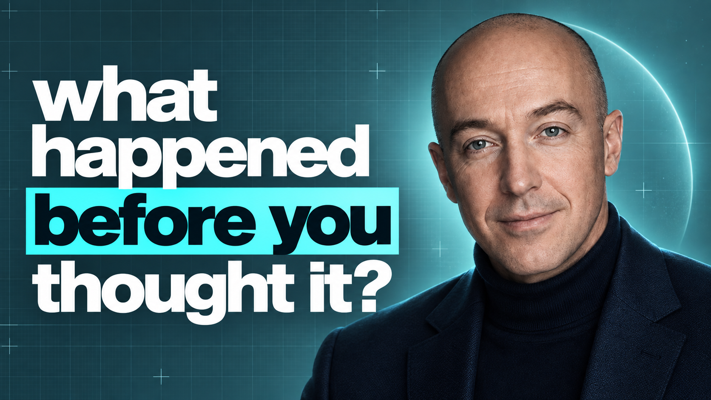

YouTube Thumbnail — 1280 × 720 · Actual scale 72%

How it reads at small size (YouTube grid, mobile)
Ep 1
Ep 2
Ep 3
Place images/beforeyouthoughit.png in your images folder to see your portrait in the mockup.
Teal highlight bar, crosshair markers, bottom accent rule, "Doing the Work" series label. Swap the question per episode. Same template, different question = instant recognizable series.